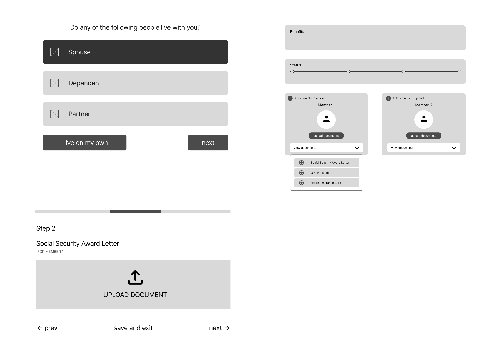
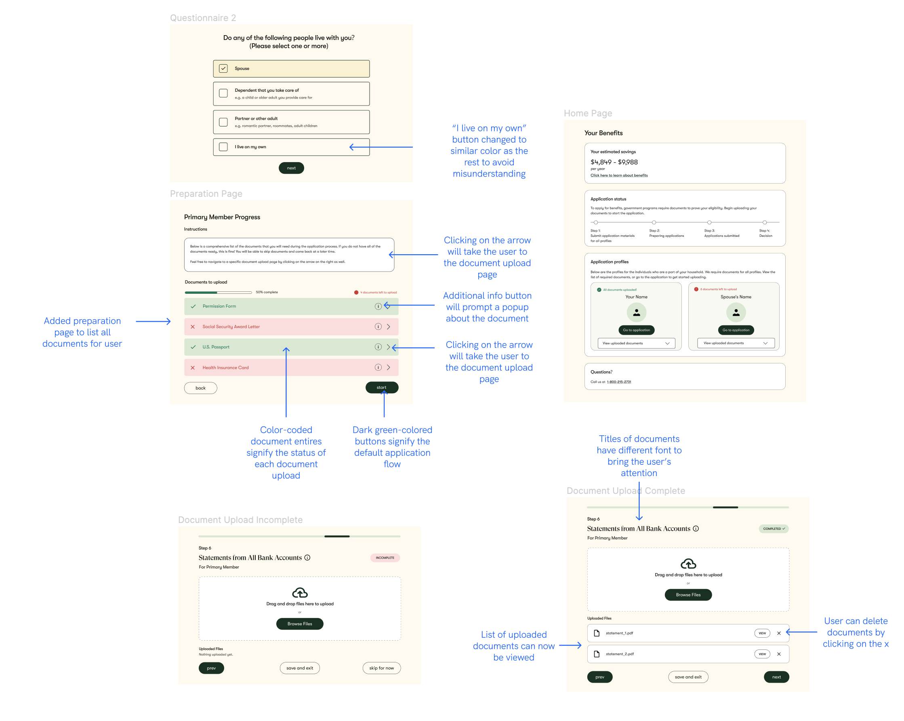

I worked as a part of a group of 4 to refine the application website for the company Uno Health and was the main contributor of the preparation page design in the final Figma prototype. Throughout the course of 3 weeks, we received multiple rounds of feedback from peers and our point of contact in Uno Health to create the final interactive Figma mockup.
According to Uno Health, as the website currently stands, their application page for the primary user and the spouse is quite overwhelming (as shown below): it contains the upload site for every document and contains duplicates for the documents that need to be separately uploaded for each user. Therefore, we were tasked by Uno Health to solve this problem.
After individually brainstorming sketches to address the problem, we took the best features from each sketch and constructed our final Lo-Fi prototype. This ultimately consisted of a linear document upload flow that prompted users by page to upload a specific type of document, and each member of the household was placed under a separate flow. This was intended to solve the main issue of too many documents on one page.
I was worried about the inefficiency of clicking through the linear flow to reach a specific document, so I suggested a dropdown to upload a specific document on the home page.
The three largest pieces of feedback we received from this first wireframe were:
After receiving feedback, we modified our Lo-fi wireframe accordingly and constructed our final Hi-Fi prototype. The changes are labeled below:
The largest change from our previous wireframe was the addition of a preparation page that listed all of the required documents, which I was in charge of up until the final prototype. This served essentially the same function as the original dropdown, but to prioritize visibility, we decided that creating a separate page for the list would be best.
We presented our interactive hi-fi prototype to our point of contact in Uno Health. She enjoyed the small explanation blurb, and she liked the addition of the preparation page. Her main piece of feedback was to save the red error state for when the documents were uploaded incorrectly instead of having it be the default state (as there is a distinction between the two) and that the nonlinear dropdown feature can be downplayed a little to guide user to follow the linear flow by default.
This was a very rewarding experience for two reasons: the ability to work in a group on making a design product and the ability to collaborate and communicate with industry design leads, both of which I have not had experience with before. I enjoyed being able to bounce my ideas off of other peers and feeling like the project that we created was the best of many minds, and I liked how I was able to take ownership of a specific section of the prototype. I was also able to get insight on the considerations that industry designers take into consideration when designing a website, which will hopefully make me a better UI designer in the future.